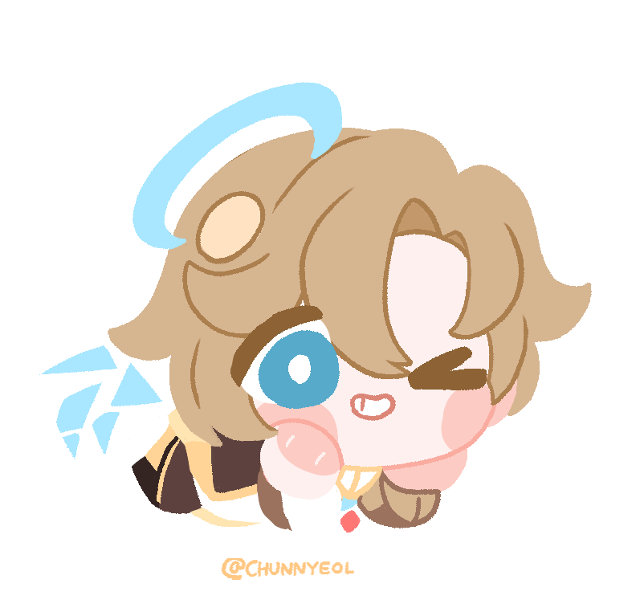
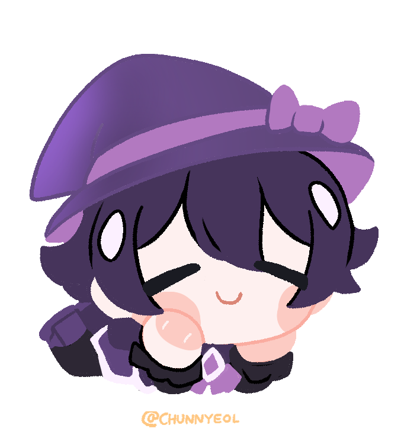
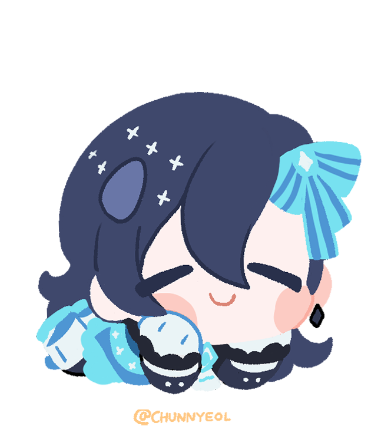
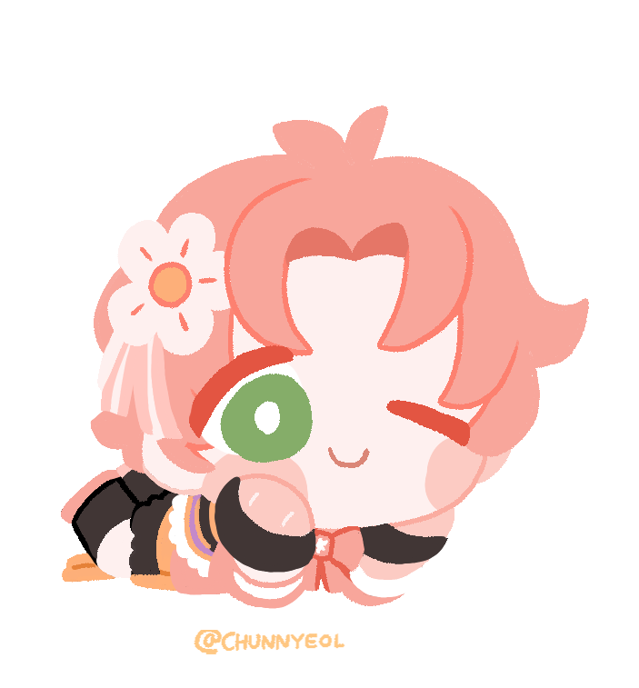
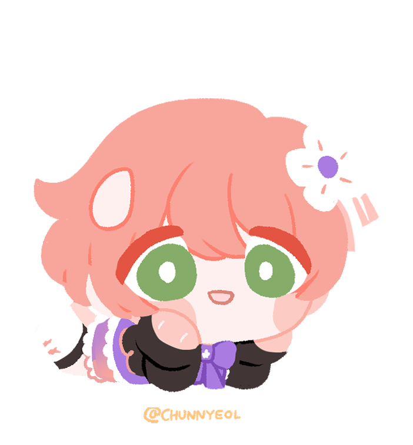
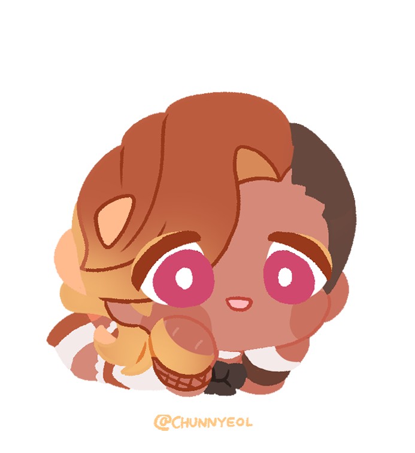

About
Mahou D&D (aka magical girl D&D) is a homebrew expansion for the fifth edition of dungeons and dragons. Inspired by Sailor Moon, Cardcaptor Sakura, and other magical girl shows, the player characters take on the role of “Magical Girls”, unassuming teenagers who stumble into magic and are tasked with saving the world. Of course, they don't HAVE to be girls - though generally, the genre focuses on girls. Unlike typical Dungeons and Dragons settings, this takes place in a modern world, where most people don't know magic exists. There is a much greater focus on interpersonal relationships, and the character's lives outside of their adventures. With additional homebrew rules to spice up roleplay and combat, this is a completely different spin on the classic tabletop role playing game.
What is D&D?
Dungeons and Dragons (often abbreviated to D&D or DND) is a tabletop roleplaying game developed and published by wizards of the coast. Players create their own characters, who are then led on adventures by the game's dungeon master (DM, for short). The game is typically played around a table, with the DM describing scenes, players roleplaying their characters, and occasionally using maps and miniatures to facilitate combat encounters and some scenes. It can also be played online through the use of a virtual tabletop, such as roll20 or forge, in the same manner. The basic rules of D&D are officially available for free online, with various guidebooks and premade campaigns available for purchase as well. I recommend visiting dndbeyond to learn more. They are a great resource for reading the rules, purchasing official guidebooks and campaigns, and learning more about D&D.
Meet The Cast
The Holy Magical - Gavin
Gavin Kashton is a 16 year old student at jumping krill secondary school. He is an energetic, outgoing kid, but can be hard to handle. He recently awoke to his magic powers thanks to a necklace left by a missing friend of his. Now, he works with the team to try and learn the truth of what happened to his friend.
As a holy magical, he gains his magic powers from “belief”. There is much Gavin believes in, though perhaps his most important belief is in his friends. Powered by thoughts of an old friend, lost somewhere, and his current friends, who fight with him against powerful fiends, he uses his magic to support the team. His powers specialize in healing, though he is also capable of boosting his friends' powers and defeating enemies.
The Witch - Orion
Orion Bispora is a 17 year old student at Jumping Krill Secondary School. He is more reserved compared to his teammates, but just as capable of getting into trouble. He enjoys gardening, and spends his free time raising plants. His mother disappeared 3 years ago, and now uses his powers in the hopes that he can find the truth of what happened to her.
As a witch, Orion specializes in finding and exploiting enemy weaknesses. Using his magic, he can weaken enemies, freeze creatures in place, and even use someone's fears against them. He is something of a jack-of-all-trades, being capable of debuffing enemies, healing allies, and dealing devastating damage. Through careful strategizing and planning, Orion can decimate enemy defenses and help his allies achieve victory.
The Water Elementalist - Etan
Etan Rhaspho is an 18 year old student at Jumping Krill Secondary School. He is extremely quiet, but don't let that fool you - he is more than capable of causing chaos. He gained his magic when he was younger, after acquiring a sentient magical book. Together, he and his book are quite the duo, and trouble follows them wherever they go. Etan himself is quite superstitious, and tends to gravitate towards tarot cards and magic when faced with an unknown phenomena. However, he still works with the rest of the team to protect the world from danger.
As a water elementalist, Etan is able to channel his magic through nature and utilize the might of the ocean. However, the tides of an ocean change constantly, and nature itself is unpredictable. His magic takes on this wild nature, and sometimes causes surges of unknown power. This can be as simple as regaining a spell slot, or as devastating as summoning a tsunami. However, with the help of his book and allies, he can channel this energy to help protect others.
The Summoner - Mitsuki
Mitsuki Hisakawa-Refr is a 17 year old student, and Kei's twin. He is generally outgoing and friendly, willing to help anyone that needs it. However, he is also very passionate and stubborn, which can cause him to but heads with his friends. Even still, he cares deeply for others, and want to protect people when possible.
It was thoughts of wanting to protect his family that caused him to gain magical powers. When his sister Kei was in danger, he managed to call upon and summon a magical creature. Named Aisho, this nine-tailed fox was born from the god of heart, Adzumi, and sent to assist Mitsuki. Aisho fights along Mitsuki, attacking enemies in sync with his summoner. Together, they work to protect the party and anyone else who needs help.
The Knight - Kei
Kei Hisakawa-Refr is a 17 year old student, and twin sister of Mitsuki. She is more soft spoken than her twin, tending to keep to herself. However, she is an extremely hard worker, and cares a lot for others. She was saved once in the past by a magical girl, and now that she has powers of her own, she wants to be able to save others, too.
As a Knight, Kei's strength goes beyond her magic - rather, her true strength is in her weaponry. Able to use long swords and other martial weaponry, Kei meets enemies at a close range to subdue threats, and has additional skills to help her aid her allies and protect people from danger. The magic she does know builds off her strength in weaponry, working alongside sword strikes and increasing her maneuverability.
The Fire Elementalist - Eli
Aurelius Oogami (Eli, for short) is a 15 year old student at Jumping Krill Secondary School. She comes from a large family, with 7 older siblings. She only recently moved into town, and between being the new girl in school and discovering magic powers, she's struggled a bit. However, she cares greatly for her friends, and is willing to do anything to protect them.
Eli's magic stems from fire, and burns intensely just like it. She relies less on spellcasting and more on brute force, using her magic to increase the power of her blows. While her magic can be just as destructive as fire is, she uses it to protect people. She is capable of stopping an enemy's movement, and can even take blows for her friends. She's an all-around strong attacker and defender.
Shop
Items
Cart
Your Cart is Currently Empty
Subtotal: 0
Shipping: flat $10.00
Tax: 8.5%
Total: 0